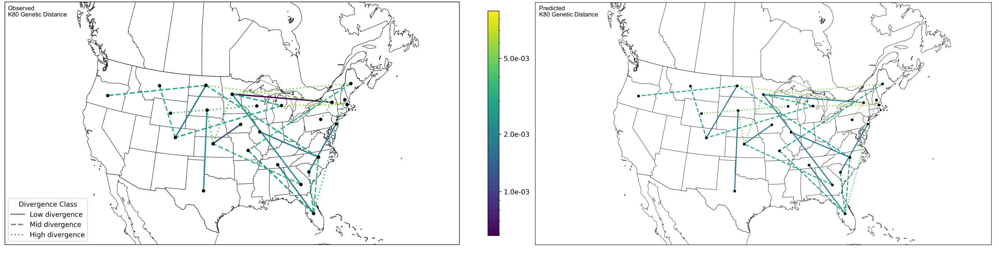
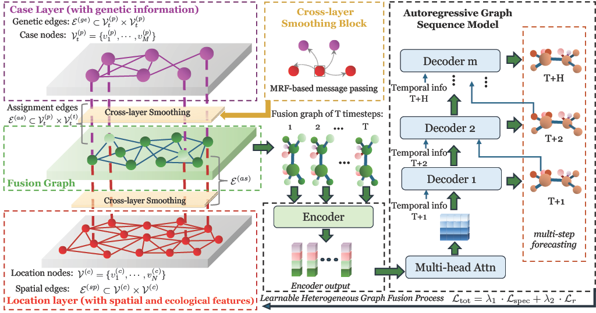
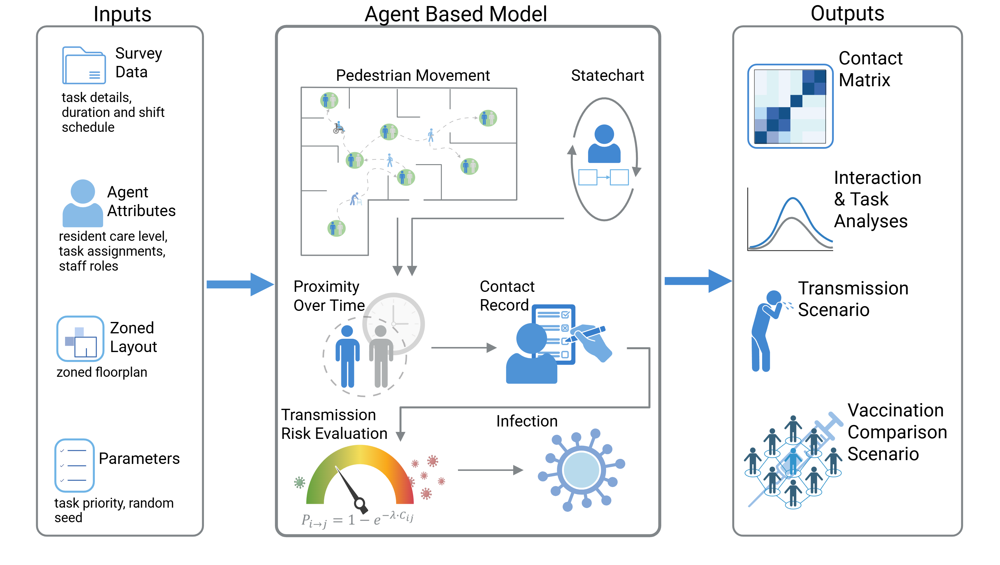
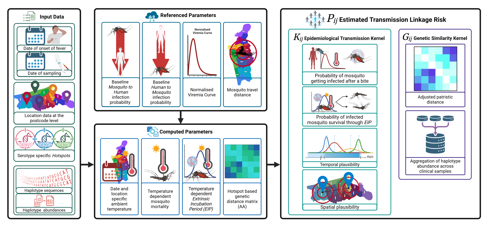
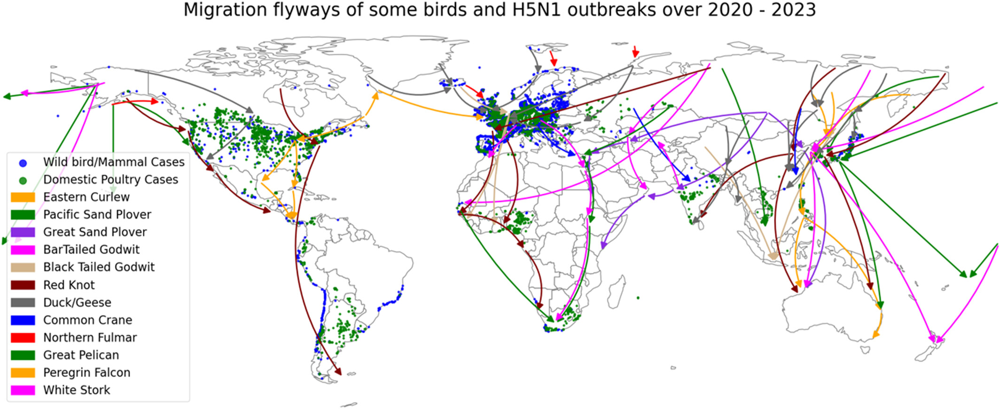
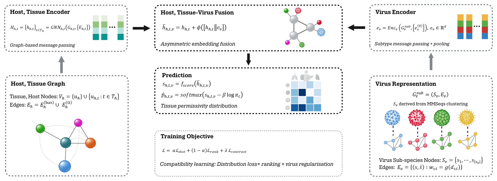

2026
Conference talk
VTT-Net: Learning Viral Tissue Tropism Using Graph Neural Networks
ViBiom 2026· Vilnius, Lithuania
Computational biology · virology · graph learning
Postdoctoral Research Assistant, MRC University of Glasgow Centre for Virus Research
Visiting Fellow, School of Computer Science and Engineering, University of New South Wales
I am a computational biologist (virology) focusing on graph-based models for viral host and tissue tropism. Currently, I am developing graph neural network models to predict viral tissue tropism and build large-scale virus–tissue interaction datasets using text-mining pipelines. Previously, I was a postdoctoral research associate at the School of Computer Science & Engineering, UNSW, where I developed data-integrative modelling frameworks for avian influenza in the United States. I now hold a visiting fellow position to continue this work. I completed my PhD at the Kirby Institute (UNSW), where I developed mechanistic epidemic models to evaluate COVID-19 vaccination strategies, generated synthetic contact matrices for aged-care facilities using agent-based simulation, and applied phylogenetic methods to investigate clustering in human avian influenza cases.






Scroll or drag to browse selected publications.

A graph neural network framework for modelling virus–tissue interactions and predicting tissue-level tropism from sparse observational data.

A heterogeneous graph framework for forecasting avian influenza outbreaks using ecological connectivity, genomic data, and sparse spatiotemporal surveillance information.
Selected conference talks, invited seminars, workshops, and research presentations.
ViBiom 2026· Vilnius, Lithuania
ViBiom 2026 · Vilnius, Lithuania
Host institution · Location